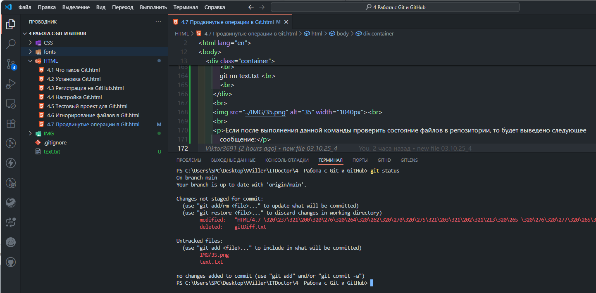

Сообщения о статусе файлов могут показаться немного многословными. Поэтому существует возможность вывести статус в короткой форме. В этой форме статус файлов будет показыватся соответствующей буквой перед именем файла:
| Статус | Описание |
|---|---|
| нет буквы | unmodified (неизмененный) |
| M | modified (модифицированный) |
| T | file type changed (изменен тип файла) |
| A | added (добавлен) |
| D | deleted (удаленный) |
| R | renamed (переименованный) |
| C | copied (скопированный) |
| U | updated but unmerge (обновленный, но не слившийся воедино) |
Для того, чтобы вывести статус в короткой форме нужно воспользоваться следующей командой:
Иногда необходимо посмотреть, какие изменения были внесены в файлы после предыдущей индексации. Это делается с помощью команды diff:
git diff
В Git есть возможность одной командой сделать и индексацию файлов и коммит, таким образом упростив себе
работу, сведя
все к одной команде, а не к двум.
Для этого добавляем к команде commit флаг -a, а команду add пропускаем:
git commit -a -m "Сделал изменения"
В результате выполнения этой команды все отслеживаемые на этот момент файлы автоматически проиндексируются. Однако не стоит злоупотреблять этой командой, поскольку в одном стеке могут сохраниться и нежелательные изменения.
При работе с Git нельзя вручную удалять файлы из папки с проектом. Если мы попытаемся сделать это, то после проверки командой status, он будет отображаться в категории 'Changes not staged for commit' как измененный, но не проиндексированный файл. Чтобы наверняка удалить ненужный нам файл следует использовать команду git rm -f:
Команда «git rm -f text.txt» в Git позволяет удалить из отслеживаемых индексированный файл text.txt из папки. Флаг «-f» в этой команде заставляет удалять файлы с ограничениями, которые препятствуют обычному удалению.
Для переименования файлов в Git используется команда mv. Мы указываем в ней старое имя файла и новое имя в следующем порядке:
После проверки статуса файлов в терминале будет выведено сообщение о переименовании файла:
Команда mv также используется для перемещения файлов. Давайте, например, переместим файл из одной папки в другую:
Дело в том, что операционные системы устроены так, что переименование файлов и их перемещение тождественны.
В процессе работы над проектом в системе Git бывает нужно просмотреть историю коммитов. Для этой цели мы используется команда log:
После выполнения команды в терминале мы увидим список коммитов в следующем формате: номер коммита, имя
автора, его
сделавшего, дату, когда изменения были сохранены и примечание к коммиту.
Можно вывести не все, а только заданное количество последних коммитов. Для этого к команде log нужно
добавить флаг с
числом, задающем количество последних коммитов. Давайте, например, отобразим последние три коммита:
Для того, чтобы выводить историю коммитов в сокращенном виде, только с нужными нам параметрами, к команде log можно добавлять специальные флаги:
| Флаг | Описание |
|---|---|
| git log -p | Показывает разницу в изменениях каждого коммита. |
| git log --stat | Отображает статистику для коммита. |
| git log --shortstat | Показывает количество изменений/вставок/удалений при применении команды --stat |
| git log --name-only | Отображает информацию о коммите и имена измененных файлов |
| git log --name-status | Выводит сообщение о списке файлов, которые были изменены, в т.ч. добавлены и удалены. |
| git log --relative-date | Отображает дату применения изменений в относительном формате (например, '1 day ago'). |
| git log --pretty=oneline | Меняет формат вывода истории коммитов: =oneline в одну строку. |
| git log --pretty=full | Меняет формат вывода истории коммитов: =full - полный. |
| git log --pretty=short | Меняет формат вывода истории коммитов: =short - краткий вывод |
| git log --graph | Показывает ветвление веток Git и историю их слияний. |
Ограничить вывод истории коммитов можно и с учетом времени, когда они были сделаны. Например, флаг --since=1day отобразит коммиты, сделанные за 1 день. Полный список флагов для ограничения вывода коммитов смотрите ниже:
| git log --since=1day | Отображает коммиты, сделанные за 1 день. |
| git log --since=1week | Отображает коммиты, сделанные за 1 неделю. |
| git log --since=1month | Отображает коммиты, сделанные за 1 месяц. |
| git log --since=1year | Отображает коммиты, сделанные за 1 год. |
| git log --after="2025-10-01" | Отображает коммиты, сделанные после 1 октября 2025 года. |
| git log --before="2025-10-01" | Отображает коммиты, сделанные до 1 октября 2025 года. |
| git log --since="2025-10-01" --before="2025-10-02" | Отображает коммиты, сделанные между 1 октября 2025 года и 2 октября 2025 года. |
| git log --until="2025-10-01" | выводит коммиты, сделанные до указанной даты. |
| git log -5 | Отображает последние 5 коммитов. |
| git log --author="Viktor3691" | Отображает коммиты, сделанные автором Viktor3691. |
| git log --grep="fix" | Отображает коммиты, в которых содержится ключевое слово fix. |
| git log --author="Viktor3691" --since="2025-10-01" | Отображает коммиты, сделанные автором Viktor3691 и сделанные после 1 октября 2025 года. |
| git log --author="Viktor3691" --grep="fix" | Отображает коммиты, сделанные автором Viktor3691 и в которых содержится ключевое слово fix. |
Давайте выведем в консоль два последних коммита:
При работе над проектом в системе Git иногда возникают ситуации, когда коммит отправлен неверно: например,
преждевременно или с неверным комментарием. В Git есть возможность отправить исправленный коммит, который
будет принят
вместо предыдущего коммита.
Для этого сначала вносите правки, индексируете их, а затем выполните команду commit, но с флагом --amend: